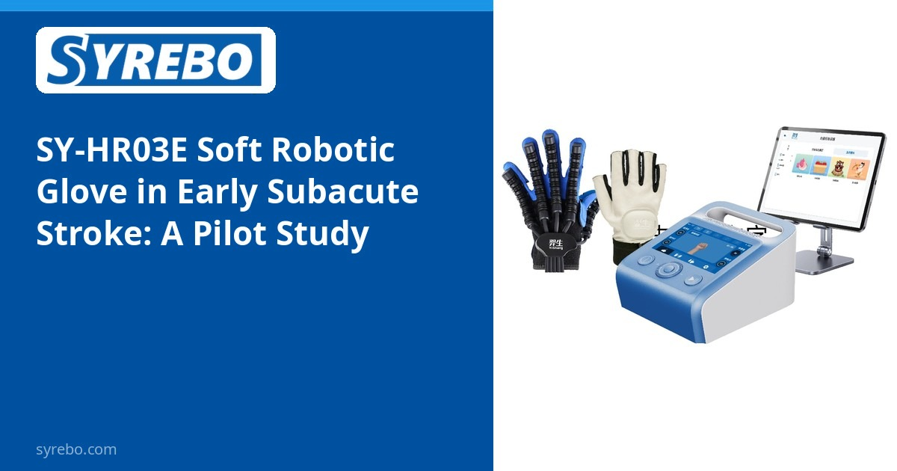
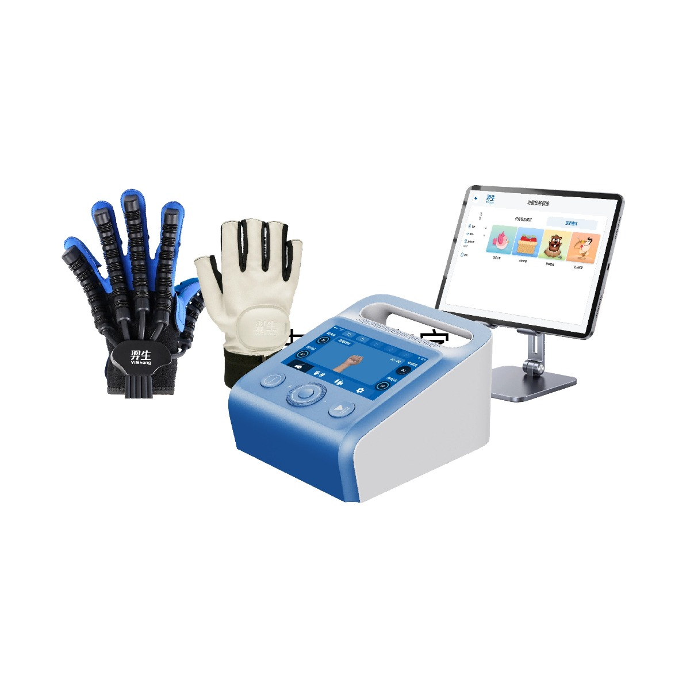

Syrebo rubrika kliničkih istraživanja
Čitanja temeljena na dokazima o robotskoj rehabilitaciji šake


Rana subakutna faza nakon moždanog udara kritičan je prozor za rehabilitaciju šake, ali su bolesnici još krhki, pa se najprije mora odgovoriti može li se nova rukavica sigurno koristiti. Pilot randomizirano istraživanje osmišljeno je upravo za to.
Dvadeset bolesnika s ranim subakutnim moždanim udarom nasumično je raspoređeno u dvije skupine po 10, uz vježbanje s mekanom robotskom rukavicom SYREBO SY-HR03E tijekom 4 tjedna, ukupno 20 sesija. Među autorima istraživanja su osobe povezane sa Shanghai SiYi Intelligent Technology.
Nije bilo odustajanja ni štetnih događaja, što podupire izvedivost u ovoj krhkoj fazi. Što se tiče signala učinkovitosti, FM-Hand (motorička funkcija šake) i modificirani Barthelov indeks (sposobnost svakodnevnog života) pokazali su značajnu interakciju skupine i vremena, što znači da se skupina s rukavicom s vremenom poboljšala više od kontrolne skupine.
Pilot istraživanje (n=20); zaključci su ograničeni na izvedivost i preliminarnu učinkovitost.